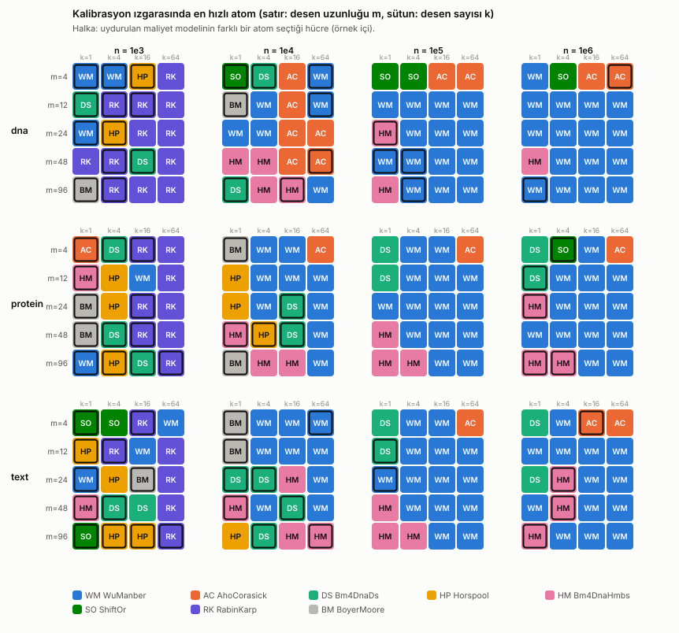
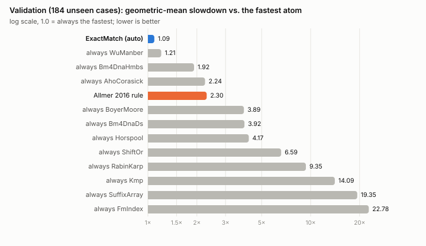
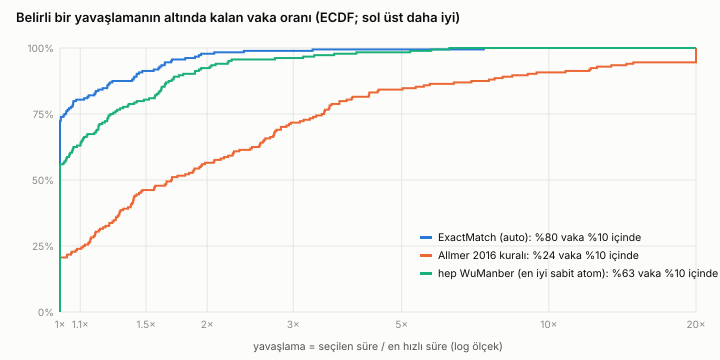
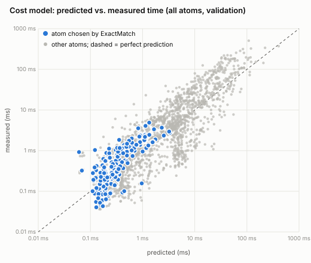

IoS bileşeni · sequence.pattern-match.exact
Girdinin şekline bakıp en hızlı tam eşleştirme algoritmasını kendisi seçen molekül
On iki atom (Horspool'dan FM-index'e), karakter frekanslarını hesaba katan bir maliyet modeli ve görülmemiş verilerde dürüst bir karşılaştırma. Saf JavaScript, sıfır bağımlılık. Aşağıdaki demo, depodaki kodun aynısını tarayıcınızda çalıştırır.
Canlı demo: explain + run
Bir veri kümesi seçin veya FASTA yapıştırın, desenleri girin. Molekül ilk kayda bakar, her atomun maliyetini tahmin eder ve en ucuzunu çalıştırır. "Bütün atomları ölç" düğmesi tahminleri sizin makinenizdeki gerçek sürelerle karşılaştırır.
Hazır.
Çalıştır'a basın.
Tahmin edilen maliyet
em.record (JSON)
Eşleşmeler
| header | pattern | position | length |
|---|
Atomlar
Hepsi ExactSearchAtom'dan türer (Template Method) ve sözleşme testlerinin aynısını geçer. Rozet, ödev tablosundaki grubu; sayı, 240 vakalık kalibrasyon ızgarasında kaç vakada en hızlı olduğunu gösterir.
Seçim nasıl yapılıyor?
ShapeBuilder
İlk kayıttan n, σ, k, mmin/maks/ort, karakter frekansları, Σf².
ForcedStrategy
strategy bir atom adıysa onu doğrular (bilinmeyen ad → seçenekleri listeleyen hata).
Applicability
applicable(shape) ≠ true olan atomu nedeniyle birlikte dışarıda bırakır.
CostEstimation
tahmin = taban + Σ cf · özellikf; özellikler beklenen işlem sayılarıdır.
CheapestAtom
En ucuzu seçer, why metnini ve sıralamayı yazar.
Özellik örneği: Horspool
Beklenen kayma, metnin karakter frekansları f(c) ve desenin gerçek kayma tablosundan kapalı biçimde: E[s] = Σ f(c)·kayma(c). Pencere sayısı n / E[s], doğrulama pencere × f(son) × beklenen sonek. DNA'da (σ=4) kayma kısa kalır; protein veya metinde uzar. Model bunu ölçmeden "bilir".
Katsayılar nereden?
npm run calibrate 240 vakada her atomu ölçer (ısınma + 3 tekrarın ortancası), ardından her atom için bağıl hatayı en aza indiren negatif olmayan en küçük kareleri çözer. Sonuç src/selection/coefficients.js'e yazılır. Kalibre edilmemiş yeni bir atom kendi defaults katsayılarıyla çalışır.
Neden kural değil?
"m < 50 ise DS" gibi bir kural her yeni atomda yeniden yazılmalıdır. Maliyet modelinde yeni atom kendi özelliklerini getirir; molekül kodu değişmez. Bunu bir test, yalnızca test dosyasında var olan sahte bir atomu seçtirerek kanıtlar.
Sonuçlar
Ölçüm makinesi yükleniyor…
| Politika | En hızlıyı seçme | %10 içinde | Geo. ort. yavaşlama | En kötü | Toplam / en iyi |
|---|
Kalibrasyon ızgarası gezgini
Her hücre bir vaka: renk ve kod en hızlı atomu gösterir. Üzerine gelince bütün atomların süresi görünür.




En kötü 8 seçim
| Vaka | Alfabe | n | Kayıt | k | m | En hızlı | Seçilen | Yavaşlama |
|---|
Analiz raporun 6. ve 7. bölümünde. Ham ölçümler: bench/results/.
UML
Kaynaklar Mermaid (.mmd, GitHub doğrudan çizer) ve PlantUML (.puml) olarak depoda. Elle çizilecekse 9 kutuluk sürüm yeterli.


Tasarım desenleri ve SOLID
| Desen | Nerede | Neden |
|---|---|---|
| Template Method | ExactSearchAtom.process() | Sözleşme adımları (doğrulama, ignoreCase, sıralama, tekrarlar) tek yerde; atom yalnızca prepare() ve findAll() yazar. |
| Strategy | 12 atom sınıfı | Aynı görev, aynı arayüz; molekül çalışma anında birini seçer. |
| Registry | AtomRegistry | Yeni atom = register(); molekül kodu değişmez. |
| Factory Method | ExactMatch.createAtom(), AtomFactory, CommandFactory | Nesneler adla üretilir; hiçbir üst katman somut sınıfa new demez. |
| Chain of Responsibility | SelectionChain.js | Seçim adımları bağımsız; yeni kural yeni bir işleyicidir. |
| Facade | IoSFacade | CLI ve bu sayfadaki demo için tek giriş noktası. |
| Command | RunCommand, ExplainCommand, ListCommand | Her CLI fiili, terminalsiz test edilebilen bir nesne. |
| Builder | ShapeBuilder | Veri şekli molekülde, ölçümde ve testlerde aynı yoldan kurulur. |
Rapor ve kaynaklar
npm test # 518 test, bağımlılık yok npm run calibrate # 240 vakalık ızgara → coefficients.js npm run bench # 184 vakalık doğrulama node bin/ios.js explain --patterns GAATTC,GGATCC < tests/data/lambda.fasta node bin/ios.js run ExactMatch --patterns ACGT,GGCC --ignoreCase < girdi.fasta > cikti.jsonl